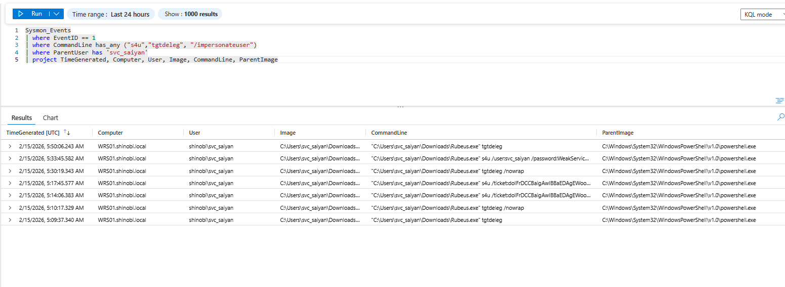
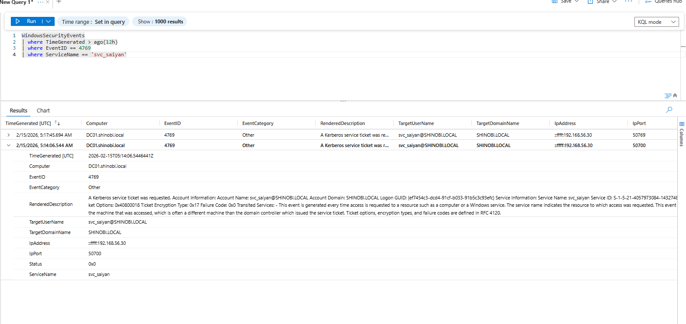
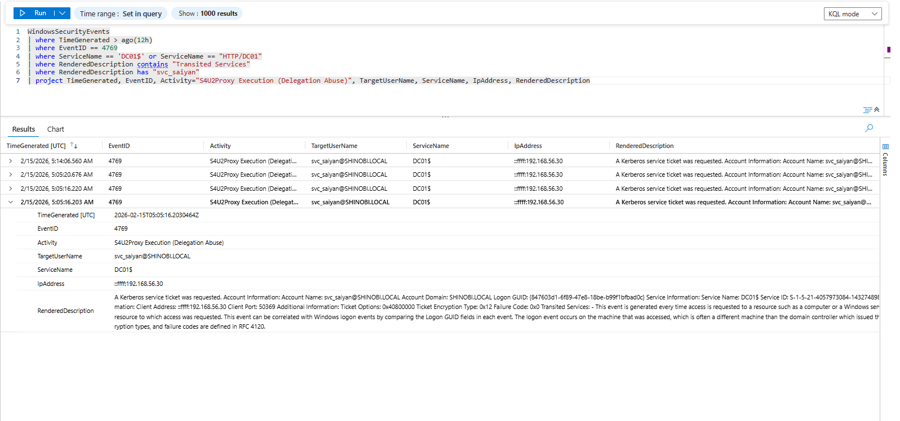

Detection & Telemetry (Constrained Delegation & S4U)
Attack Vector: The attacker utilized a compromised service account (svc_saiyan) configured with Constrained Delegation and Protocol Transition. They executed Rubeus to request a TGT (tgtdeleg), followed by an S4U2Self request to forge a ticket for a highly privileged user, and finally an S4U2Proxy request to access the Domain Controller.
Key Log Sources:
Rubeus.exe execution and specific S4U command-line flags).Objective: Detect the execution of the offensive Kerberos tooling on the compromised endpoint. Logic: Attackers must run specific commands to extract the initial TGT and perform the S4U abuse. We monitor endpoint telemetry for processes using the tgtdeleg, s4u, or /impersonateuser flags, especially when executed under the context of a service account.
KQL Query:
Sysmon_Events
| where EventID == 1
| where CommandLine has_any ("s4u", "tgtdeleg", "/impersonateuser")
| where ParentUser has 'svc_saiyan'
| project TimeGenerated, Computer, User, Image, CommandLine, ParentImage
Analysis:
Rubeus.exe.tgtdeleg /nowrap command to extract the TGT, and then the s4u /ticket:... command to forge the delegation ticket.
Objective: Detect the initial phase where the compromised service account requests a service ticket to itself on behalf of another user. Logic: We monitor Event ID 4769. In a standard environment, users request tickets to access services. In an S4U2Self abuse scenario, the targeted ServiceName is the very same service account initiating the request.
KQL Query:
WindowsSecurityEvents
| where TimeGenerated > ago(12h)
| where EventID == 4769
| where ServiceName == 'svc_saiyan'
Analysis:
svc_saiyan.svc_saiyan@SHINOBI.LOCAL.TRUSTED_TO_AUTH_FOR_DELEGATION privilege to obtain a forwardable ticket.
Objective: Detect the final phase where the forged ticket is exchanged for a ticket to the ultimate target (the Domain Controller). Logic: When S4U2Proxy is successfully executed, Active Directory meticulously logs the delegation path. In Event ID 4769, the Transited Services field explicitly records the name of the service account that facilitated the delegation.
KQL Query:
WindowsSecurityEvents
| where TimeGenerated > ago(12h)
| where EventID == 4769
| where ServiceName == 'DC01$' or ServiceName == "HTTP/DC01"
| where RenderedDescription contains "Transited Services"
| where RenderedDescription has "svc_saiyan"
| project TimeGenerated, EventID, Activity="S4U2Proxy Execution (Delegation Abuse)", TargetUserName, ServiceName, IpAddress, RenderedDescription
Analysis:
DC01$.svc_saiyan.DC01$, but the request explicitly transited through the svc_saiyan account. If svc_saiyan shouldn't be proxying administrative access to the Domain Controller, this flags a critical breach.
{kind=link}
{kind=link}
{kind=link}